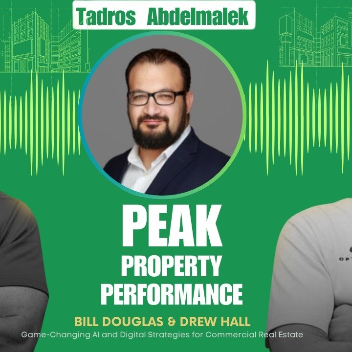

← All Episodes
Student Housing’s Secret Sauce: Data, Consistency, and Resident Experience Revealed
Episode 25 · 38 min · Mar 5, 2026

Get Started
Three ways in.
Whether you're scouting, training camp, or game time — there's a way to start today.